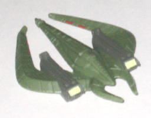

Like his wavemate
Optimus
Primal
, Megatron is different from the previous releases in the Beast
Wars 10th Anniversary line-- he's an entirely new mold, with an interesting
history. The mold was first originally design as a temporary Jungle Planet
form for
Cybertron
Megatron
, and the
idea eventually became more and more of an homage to Beast Wars Megatron.
Because it was originally concieved for Cybertron (and a later
repaint
of the same mold was released in the Cybertron line, along the same lines
as the original idea for the toy), the toy has the required Cyber Key gimmick
and the Jungle Planet "fierce, technorganicky" look to it. When the idea
for a Beast Wars 10th Anniversary line came up, it was only logical for
the Transformers designers to give the toy a paint job accurate to the
Beast Wars version of Megatron and shunt it into that line as well, with
a few extras to justify the $15 price.
Now, onto the toy itself--
Megatron's beast mode is AWESOME looking, with a very "starved, rabid"
look to the T-rex now. The toy is absolutely covered with technorganic
detailing, from the muscle-like tubes on the main body to the exaggerated
bags under the eyes to the miniature hinges molded into the tiny T-rex
arms. There's also good amount of paint detailing, as well-- the metallic
light green paint looks nice against the light purple, and gives a bit
more reptilian of a look to the places on the figure where it's applied.
The color scheme itself is pretty nice, too, and definitely spot-on accurate
to the
original Megatron figure
on which it's
based. The proportions are great, though noticeably skinnier than on the
original Beast Wars toy-- again, a result of the "starved" look to it.
However, the robot extras are pretty much all covered up in spite of this,
which is pretty extraordinary, really. The upper neck is a bit skinnier
than it should be, but that's really the only thing I can find wrong in
that respect. Megatron also has pretty nice articulation in his beast mode--
his mouth can open and close, and he can move at the neck (at three points),
hips, knees, shoulders, ankles, and there's also a hinge midway down each
of his feet so he can way around dino-style with his ankles in the air.
(Also, in case you're wondering, his Predacon symbol is painted on the
top of his left thigh.) All in all, one of the best, meanest beast modes
I've seen come along in quite a while.
Megatron's robot mode
also has extremely good looks and detailing, just as much as he does in
beast mode. The detailing on the chest is very reminiscient of his original
form, but different enough for a new toy and with some cool new paint detailing,
as well. (The upper arms and legs could use some more paint detailing,
too.) The head design is great-- definitely Beast Wars Megatron-y, with
the traditional Megatron headsculpt but with a smoother design, giving
the face a more "regal" look, which certainly suits the character. Megs
also has great articulation-- he can move at the head, waist, hips (at
two places), knees, ankles, the aforementioned place halfway down each
foot, and at the shoulders (at two places) and elbows. And, considering
that he's not weighted very much towards any one side, you can get quite
a few poses out of him. The middle section of his beast mode hangs off
his back, as he does have an almost identical transformation when compared
to his original version, but it's a bit smaller in proportion to the rest
of his body this time around, and doesn't really get in the way of movement
at all. There is one big downside to this mode, however, and that's the
proportions. They aren't horrendously ugly by any means, but they're noticeably
off. The legs are far too long proportionally, and the chest, while properly
proportioned for a leaner Transformer, isn't wide and bulky enough for
a Predacon leader. The arms are also far too short, which is more noticeable
than either the chest or the feet. Megatron's T-Rex hand has almost no
upper arm to speak of, and if you point the head-hand forward, it doesn't
look like he has any arm at all, it's just like he has a shoulder and then
the head-hand. His other arm isn't much better, as the three-clawed hand
can't reach much past his waist (which is already high up on the figure
due to the small chest, remember). The Cyber Key gimmick is also rather
weak-- instead of a cool claw-weapon like the original toy, if you insert
the Cyber Key into its slot the tail just opens to to reveal a spring-loaded
missile launcher. The launcher itself isn't bad, but the tail piece itself
is too much baggage to carry on Megatron's already undersized arms for
just a little missile launcher. Also, the Cyber Key slot's placement is...
rather odd, to say the least, especially if you use it in beast mode...
yeah, can't see how that one got by Hasbro's legal department...

Megatron comes with
a miniature replica Predacon ship, made of the bendy kind of plastic, as
the ship is too thin to use normal plastic. The mold detailing and everything
on it is top-notch, but...why the heck is it green? The ship was NEVER
green in the show, it was a dark gray... Talk about a missed opportunity...
Megatron also comes with a miniature reprint of IDW's
Beast Wars
#1 comic, though in order to continue the story you'll have to purchase
the other three comics in the miniseries anyway, so it's not really much
of an extra.
10th Anniversary Megatron
is a fine toy, with a nice robot mode even if it does suffer from some
proportion problems, and a FANTASTIC beast mode. The extras he comes with
to bump up the pricepoint to $15 are rather measly, however, so unless
you're absolutely adamant to get the toy in the original BW Megatron colors
or MUST have a green Predacon ship replica, you're probably better off
buying the cheaper (and better-colored, in my opinion) Cybertron release
of the mold.
Review by Beastbot